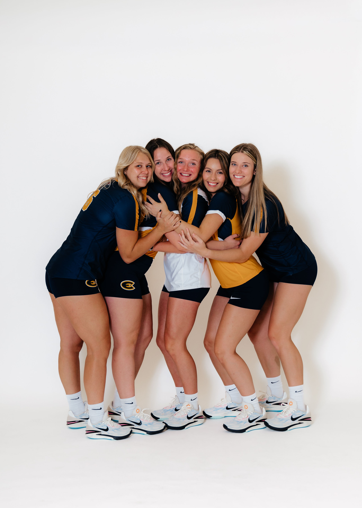

Life As A Student Athlete
My journey as a student athlete has been anything but easy. I have played at the D1 level (Southern Illinois University at Carbondale) and am currently at the D3 level (UW-Eau Claire). As a student athlete, there are a couple of things that you need to realize:
- It is a time commitment!
- You can't just "show up" everyday!
- You are not a normal student!
- You will be exhausted!
- You will make friends for a lifetime and more!
You get the full package when becoming a student athlete. That comes with showing up for you and your teammates, late nights getting homework done, and sacrificing family or friend events. Now, that sounds like a lot, and it is, but I would do it over and over again in a heartbeat. The sport of volleyball has given me so many opportunities over the years. I have met my future bridesmaids and my ride or dies that I could not live without. While it's not always perfect, I have learned so much about myself in the short 4 years I have been a college athlete!'
I got my final pictures back from a photoshoot that we did, and it still amazes me that I have done this sport for 16 years! Time has flown by, and I am trying to soak in and cherish every moment!